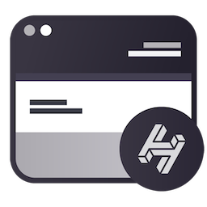
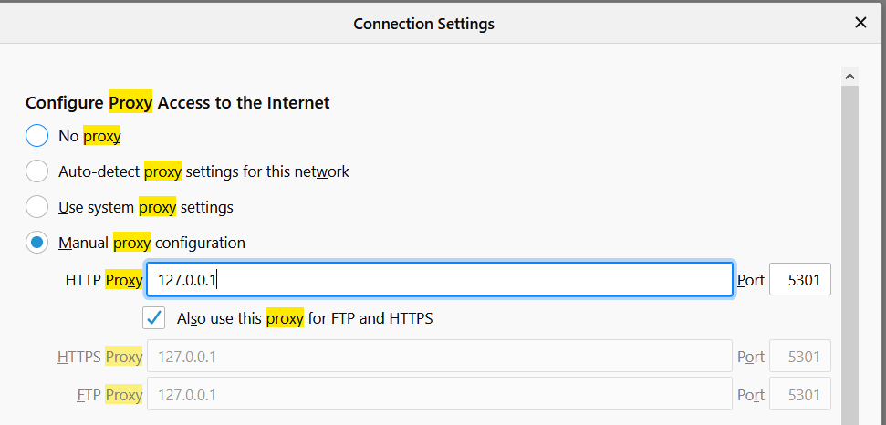
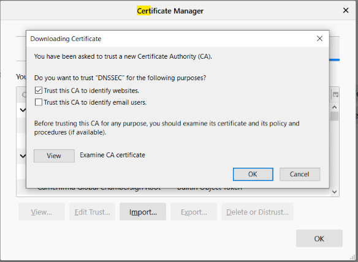
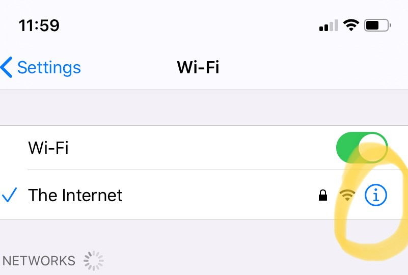

HandyBrowser 0.2
HandyBrowser 0.2 Changelog:
HandyBrowser 0.2 adds support for community projects godane and hnsd.
- godane enables the use of DANE (DNS Based Authentication of Named Entities) in browsers using a simple proxy. It currently supports DANE-EE, and works with self-signed certificates.
- hnsd is a Handshake SPV resolver daemon for the Handshake network. Written in C for speed/size/embedability. It enables us to do fast lookups of Handshake names without relying on a full sync of the blockchain in a Handshake fullnode.
Other Updates:
- In the HandyBrowser menu there is now a guide showing you how to use HandyBrowser's resolver/proxy to resolve Handshake names in your favorite browsers. This was something you could always do, we just made it more prominent. Most of the guide follows below:
Fun fact: you can use the Handshake backend of HandyBrowser in your favorite web browsers on the same local network (meaning your mobile too).
Firefox Instructions
iOS Instructions
Firefox
- Goto Options
- Search for "Proxy"
- Click on the "Settings..." button in the Network Settings results
- Enter your IP and port (5301) from the HandyBrowser Proxy Info panel like so:
- 
- Now search in options for "Certificates", and click the "View Certificates..." Button

- Download your Handshake Proxy Certificate in HandyBrowser, and then in Firefox, click "Import..." to import the downloaded certificate.
- When importing, you will check the box for "Trust this CA to Identify Websites" like this:
- 
And then click "OK" - Now visit a Handshake enabled site, like: http://welcome.nb/, or https://proofofconcept/
- Note: Firefox may want you to add a "." after the TLD, aka: "welcome.nb."
iOS
- Open "Settings"
- Wi-Fi Settings
- Click the "i" icon next to your wifi network like:
- 
- Scroll to the bottom of this screen, and tap "Configure Proxy"
- Set to "Manual" (try Automatic too if youre lucky)
- Set the IP and port to the address listed on this page
- Tap "Save" in the top-right
- Visit a Handshake enabled site like http://welcome.nb./ (notice the "." after the TLD)